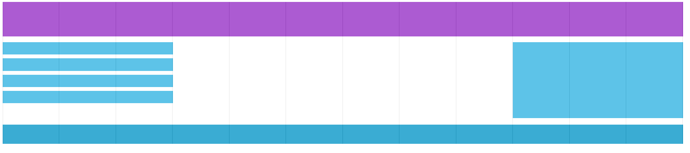

Grid-View
Velký počet webových stránek je tvořen pomocí takzvaného Grid-View - rozložení stránky (layout) je rozděleno do několika sloupců (column)
Grid-View má často těchto sloupců 12 a jejich celková šířka je rovna 100% šířce okna prohlížeče
Způsob využití:
Naše stránka bude mít nějakou sekci. Tuto sekci budeme registrovat jako řádek (row). V každém řádku jsou sloupce (column). Tyto sloupce musí v 12ti sloupcovém Grid-View dávat dohromady 100% šířky stránky.
Příklad: Budeme mít řádek ve kterém budou sloupce s označením col-2 a col-10. Col-2 a col-10 dávají dohromady 100% šířky stránky (2+10 = 12, 12 je 100% šířka)
Media Queries
Editor
Pro živou ukázku je CSS a JavaScript vepsaný přímo v dokumentu - v praxi tyto soubory vždy oddělujte do externích souborů
<!DOCTYPE html>
<html>
<head>
<style>
* {
box-sizing: border-box;
}
.header {
background-color: #9933cc;
color: #ffffff;
padding: 15px;
}
.menu ul {
list-style-type: none;
margin: 0;
padding: 0;
}
.menu li {
padding: 8px;
margin-bottom: 7px;
background-color: #33b5e5;
color: #ffffff;
box-shadow: 0 1px 3px rgba(0,0,0,0.12), 0 1px 2px rgba(0,0,0,0.24);
}
.menu li:hover {
background-color: #0099cc;
}
.aside {
background-color: #33b5e5;
padding: 15px;
color: #ffffff;
text-align: center;
font-size: 14px;
box-shadow: 0 1px 3px rgba(0,0,0,0.12), 0 1px 2px rgba(0,0,0,0.24);
}
.footer {
background-color: #0099cc;
color: #ffffff;
text-align: center;
font-size: 12px;
padding: 15px;
}
.row::after {
content: "";
clear: both;
display: table;
}
[class*="col-"] {
float: left;
padding: 15px;
width: 100%;
}
@media only screen and (min-width: 768px) {
.col-1 {width: 8.33%;}
.col-2 {width: 16.66%;}
.col-3 {width: 25%;}
.col-4 {width: 33.33%;}
.col-5 {width: 41.66%;}
.col-6 {width: 50%;}
.col-7 {width: 58.33%;}
.col-8 {width: 66.66%;}
.col-9 {width: 75%;}
.col-10 {width: 83.33%;}
.col-11 {width: 91.66%;}
.col-12 {width: 100%;}
}
</style>
</head>
<body>
<div class="header">
<h1>Chania</h1>
</div>
<div class="row">
<div class="col-3 menu">
<ul>
<li>The Flight</li>
<li>The City</li>
<li>The Island</li>
<li>The Food</li>
</ul>
</div>
<div class="col-6">
<h1>The City</h1>
<p>Chania is the capital of the Chania region on the island of Crete. The city can be divided in two parts, the old town and the modern city.</p>
</div>
<div class="col-3 right">
<div class="aside">
<h2>What?</h2>
<p>Chania is a city on the island of Crete.</p>
<h2>Where?</h2>
<p>Crete is a Greek island in the Mediterranean Sea.</p>
<h2>How?</h2>
<p>You can reach Chania airport from all over Europe.</p>
</div>
</div>
</div>
<div class="footer">
<p>Tato ukázka je ze stránky <a href="https://www.w3schools.com/css/tryit.asp?filename=tryresponsive_mobilefirst" target="_blank">w3schools.com</a>. Určitě stojí za omrknutí :)</p>
</div>
</body>
</html>